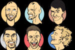

FESTIVAL
ZÁMEČEK 2018
2.6. 2018 od 12:00 hodin
ve Středočeském muzeu v Roztokách u Prahy (mapa)
Vstupné dobrovolné!
Program
Hlavní scéna - pod stromy
- ABC Academy
- Swingující marionety
- Second Band
- Callhouse Theory Trio + Voices
- Nedloubej se v nose
- Timudej
- Romba
- Mikkim & Dave Trumpeteer
Druhá scéna - tvrz
- Roztocký komorní orchestr
- Divadlo Kvítko
- Divadlo Fígl
Vodní Příkop
- Taekwondo
- Jóga smíchu
Doprovodný program
Adrenalin park, slackline, workshop animace, Deskové hry, Výtvarná dílna, dobrovolní hasiči, šermíři, šachový workshop, pletení košíků
Účinkující

Mikkim & Dave Trumpeteer
Producent, muzikant a DJ. Hraje našlápnutý bass music okořeněný prvky ragga, jungle a drum and bassu.
Na festivalu ho za mikrofonem bude doprovázet MC Dave Trumpeteer, který jeho sety ozvláštňuje precizní hrou na trubku.

Romba
Skupina, která hraje romsko-balkánský, slovenský, polský, ukrajinský, ruský a rusínský repertoár.

Timudej
Ansámbl, který se pohybuje na rozhraní více hudebních stylů - world music, samby, balkánské muziky, electroswingu, popu či ska.

VOICES
Nevšední zážitek! Takto se dá charakterizovat pánská zvuko-melodicko tvořivá formace z Marika Singers.

Pavel Vangeli
Swingující Marionety - představení, kde loutkař zpívá staré swingové písničky z 30. let a mění hlas dle charakteru postav.

Nedloubej se v nose
Kapela usmrkánků z Divadla rozmanitosti v Mostě hraje pro všechny malé a velké smrkáče.

Second band
Pražská kapela hrající Rock&Roll, Rhythm&Blues a Blues.

Callhouse Theory Trio
Fungují od prosince 2017 a hrají classic, folk a funky music.
David Zahradník
Joga smíchu. Pravidelné cvičení jógy smíchu pomáhá uchovat si pozitivní duševní přístup, takže se lépe vyrovnáme s negativními situacemi.
KWANG MYONG
Škola korejského bojového umění Taekwondo ITF působící v Roztokách u Prahy.

Fígl
Divadlo pro děti s pohádkou O chaloupce z perníku.
Divadlo Kvítko
Spolek roztockých loutkařů
Malé Kvítko
Dětský soubor spolku roztockých loutkařů Kvítko pod vedením Valerie Čermákové.
Roztocký komorní orchestr
Uskupení přátel komorní hudby z Roztok a blízkého okolí. Zahrají skladby z období baroka až po současnost.

Kajetán Písařovic
Průvodcem festivalu Zámeček bude herec a moderátor Kajetán Písařovic.